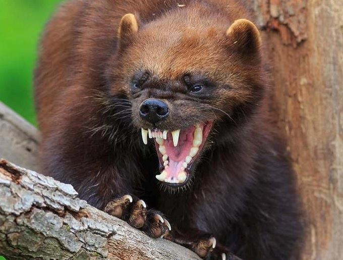
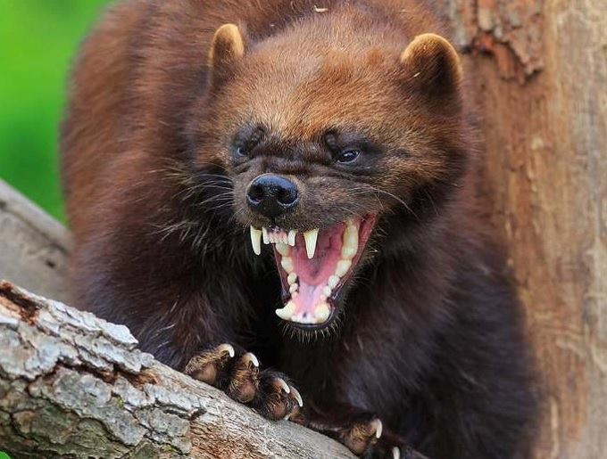

Росомаха

Росома́ха, также россома́ха (лат. Gulo gulo) — хищное млекопитающее семейства куньих, единственный представитель рода Gulo (в переводе с латинского «обжора»). Имеются два подвида: Gulo gulo gulo (Евразия) и Gulo gulo luscus (Северная Америка).
Крупный представитель подсемейства куньих. По размерам в семействе куньих уступает только калану. Вес варьируется в диапазоне от 11 до 19 кг (по другим источникам — от 9 до 30 кг), самки примерно на 10 % мельче по размерам и на 30 % меньше по весу. Длина 70—86 см, длина хвоста 18—23 см. Внешне росомаха напоминает медведя или барсука: тело у неё приземистое, неуклюжее; ноги короткие, задние длиннее передних, из-за чего спина росомахи дугообразно изогнута кверху. Голова большая, морда удлинённая, затупленная спереди; хвост недлинный, очень пушистый. Ступни ног несоразмерно велики — 10 см в ширину и 9 см в длину, что позволяет росомахе легко передвигаться по глубокому, рыхлому снегу. Когти большие, крючковатые. Росомаха — стопоходящий зверь, то есть при движении ставит лапу на всю стопу, чем и обусловлена характерная для него косолапость при движении.
| Домен | Эукариоты |
| Царство | Животные |
| Тип | Хордовые |
| Класс | Млекопитающие |
| Отряд | Хищные |
| Семейство | Куньи |
- Чебурашка
- Крокодил Гена
- Шапокляк
- Крыса Лариса
- Первый пункт
- Второй пункт
- Третий пункт

 
